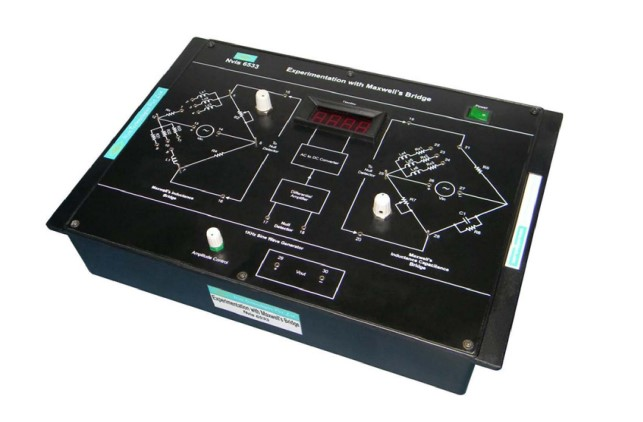

Experimentation with Maxwell's Bridge
Nvis 6533

Maxwell's Bridge
Maxwell's Bridge
Nvis 6533 Maxwell's Bridge trainer is a useful training product for measuring very small values of inductance. It is useful for students to understand the concept and operation of A.C. Bridges. Maxwell's bridge can be used to determine value of unknown inductance by comparison with either variable standard self inductance or standard variable capacitance. By setting the null point we can evaluate the unknown inductance value. This product has an on board null detection circuit with differential amplifier, AC to DC convertor and DPM. A 1 KHz sine wave generator is provided with amplitude variation facility.
Features
- Illustration of both Maxwell's inductance bridge and Maxwell's inductance-capacitance bridge on a single board
- Inbuilt 1 kHz sine wave generator with variable amplitude
- Null detector with DPM
Technical Specifications
- Mains supply : 230 V ±10%, 50 Hz
- DC Power supply : +12V, -12V
- Sine wave generator
- Fixed Frequency : 1KHz ±5%
- Amplitude Control Range : Upto 20Vpp
- Unknown Inductors : 10 mH, 20mH, 30 mH,56µH, 24µH, 12µH
- DPM : 200mV
- Unknown Internal Resistance:470W, 10 , 20 , 30
- Dimensions (mm) : W 240 x D 345 x H 110
To download the manual click here